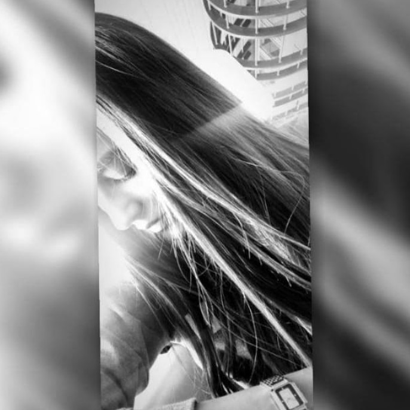

Sadia Aslamy
Student
WELCOME TO MY FAVORITE PART!
I am interested in Reading, Calligraphy, Hiking, Photography
On daily basis I read book or listen to audiobook, reading help me to reduce negative thinking, it has the power to boost my moods
and disrupt negative thinking patterns.
I can't choose one book as my favorite one, but here are some: The Alchimist, Letter to a Child Never Born, The secret...
I am sharing my Photography here:)